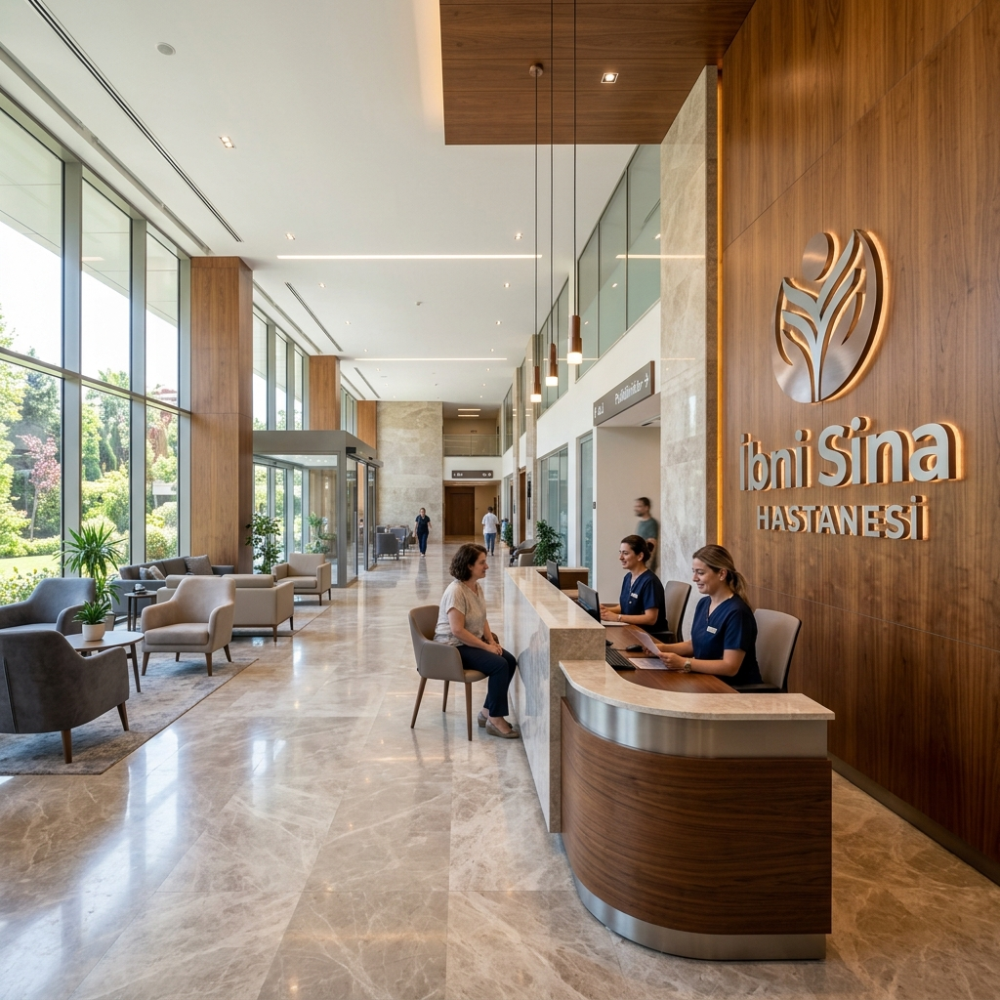

TR
|
EN
0328 813 50 10
Sağlıkta güven, saygınlık ve uluslararası kalite standartları.
Özel hastanecilik kavramının yaygınlaşmasının çok eski olmadığı ülkemizde 2002 yılında "sağlıkta güvence" sloganıyla çıktığımız yolda, değerli halkımızın bize duyduğu güven ve sektörde öncü kuruluş olmanın verdiği sorumlulukla emin adımlarla ilerliyoruz.
Hizmete başladığımız günden bu yana gerek doktorlarımız ve yöneticilerimiz, gerekse yardımcı sağlık ve idari personelimiz ile birlikte hizmette öncü kuruluş olmak, koşulsuz hasta memnuniyeti sağlayabilmek, etik ilkelerden taviz vermeden en kaliteli sağlık hizmetini sunmak için gayretle çalışıyoruz.
Halkımızın her türlü sağlık ihtiyacına cevap verebilmek için gelişen tıp teknolojilerini yakından takip ediyor, her geçen gün tıbbi donanımımızı biraz daha genişletiyoruz. Başlangıçta tek bir binadan müteşekkil hastanemizi 2005 yılında poliklinikler için yapılan ek binamızla genişleterek, hastalarımızın daha rahat bir ortamda muayene ve tedavi olabilmelerine olanak sağlayacak şekilde dizayn ettik.

20 yılı aşkın süredir Osmaniye halkının hizmetindeyiz.
Modern altyapımız, geniş hizmet alanımız ve uzman kadromuzla Osmaniye'nin hizmetindeyiz.
Kapalı Hizmet Alanı
Hasta Yatak Kapasitesi
3. Basamak Yenidoğan Yoğun Bakım
Sağlık ve İdari Personel
Modern Ameliyathane
Branş Polikliniği
Uzman & Pratisyen Kadro
Kesintisiz Acil Servis
Bireylerin yaşam kalitesini artırmak için tıp bilimindeki güncel gelişmeleri takip ederek, yüksek standartlı sağlık hizmetlerini toplumun her kesimine etik, güvenilir ve sürdürülebilir bir modelle sunmaktır. Hasta haklarına saygılı ve insan odaklı bir yaklaşımla tıp etiğine tam bağlıyız.
Teknolojik altyapısı ve uzman akademik kadrosuyla uluslararası platformda tanınan, sağlık turizminde öncü ve Türkiye'nin en güvenilen sağlık kurumu olma vizyonunu taşıyoruz. İnsan hayatına değer katan premium bir sağlık merkezi olarak geleceğe yön veriyoruz.
Hastanemiz, ulusal ve uluslararası kalite standartlarını (SKS, ISO) temel alarak, hata payını minimize eden, sürekli iyileşmeyi hedefleyen ve hasta güvenliğini tüm süreçlerin merkezine koyan bir yönetim anlayışını benimser.
Tedavi ettiğimiz her cana saygı duyuyor ve işimizi en yüksek ahlaki değerlerle yapıyoruz.
Her adımda hastalarımızın ve çalışanlarımızın sağlığını önceliyoruz.
Teşhis ve tedavide klinik mükemmellik için milimetrik hassasiyet.
Sağlıkta en son teknolojileri sistemimize entegre ediyoruz.
Åeffaf iletişim ve dürüstlükle hastalarımızın güvenini kazanıyoruz.
Osmaniye Özel İbni Sina Hastanesi olarak, ismimizi taşımaktan onur duyduğumuz büyük hekim ve filozof İbni Sina'nın tıbbi ahlakını ve bilimselliğini benimsiyoruz.
Onun asırlar boyu Avrupa üniversitelerinde başucu kitabı olan "El-Kanun fi't-Tıbb" (Tıbbın Kanunu) eserindeki insan odaklı, araştırmacı ve şefkatli hekimlik ruhunu, bugün modern tıp teknolojileriyle harmanlayarak Osmaniye halkına sunuyoruz.